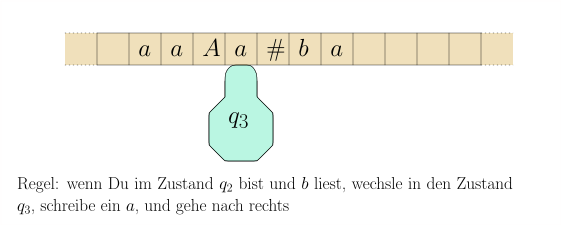
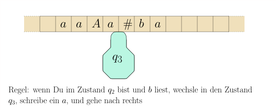
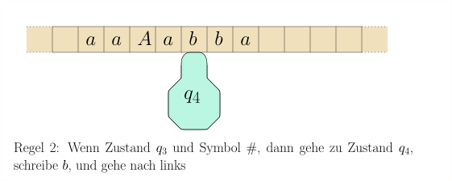
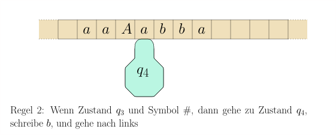

8.1 Turingmaschinen: Formale Definition und Beispiele





8.1 Turingmaschinen: Formale Definition und Beispiele
Eine Turingmaschine besteht aus einem Band, das in Zellen unterteilt ist und in beide Richtungen unbegrenzt ist, und einem Schreib-Lese-Kopf. Dieser befindet sich in jedem Schritt auf einer Zelle. Wie auch der endliche Automat oder der Kellerautomat hat die Turingmaschine einen internen Zustand. In jedem Schritt liest die Maschine das Zeichen, das sich in der aktuellen Zelle des Bandes befindet (dort, wo der Kopf steht). Abhängig vom gelesenen Zeichen $s$ und dem internen Zustand $q$ schreibt die Turingmaschine ein neues Symbol $s'$ in die Zelle, wechselt in einen neuen Zustand $q'$ und bewegt den Kopf um maximal eine Zelle, also nach link, rechts, oder gar nicht.
Sie können sich das Band auch als Magnetband vorstellen, das nach vorn oder nach hinten gespult wird, anstatt dass der Kopf sich bewegt. Am Anfang steht auf dem Band das Eingabewort und der Kopf auf dem ersten Symbol dieses Wortes. Die Turingmaschine wendet nun ihre Regeln an, bis Sie einen Endzustand erreicht. Bei Entscheidungsproblemen, wo uns nur eine Ja/Nein-Antwort interessiert, wird die Antwort durch den Entzustand angegeben: der Zustand $\qaccept$ entspricht einem Ja, der Zustand $\qreject$ entspricht einem Nein. Diese zwei Endzustände reichen im Allgemeinen aus. Wenn wir von der Maschine eine komplexere Ausgabe als Ja/Nein erwarten, so betrachten wir als Ausgabe der Turingmaschine den Inhalt des Bandes zu dem Zeitpunkt, da die Maschine den Zustand $\qaccept$ erreicht. Was brauchen wir also, um so eine Turingmaschine und ihre Arbeitsweise zu beschreiben?
Definition 8.1.1 (Turingmaschine). Eine Turingmaschine besteht aus folgenden Elementen:
Einem endlichen Eingabe-Alphabet $\Sigma$ . Dies sind die Symbole, die für das Eingabewort in Frage kommen.
Einem endlichen Bandalphabet $\Gamma$; das sind die Symbole, die auf dem Band stehen dürfen. Offensichtlich muss $\Sigma \subseteq \Gamma$ gelten. Jede Zelle kann genau ein Zeichen aus $\Gamma$ enthalten. Darüberhinaus gibt es noch das sogenannte Blanksymbol $\square \in \Gamma \setminus \Sigma$. Dies zeigt an, dass die Zelle im Moment leer ist. Im obigen Beispiel ist die Zelle links vom ersten $a$ beispielsweise leer. Am Anfang steht auf dem Band also ein Eingabewort $w \in \Sigma^*$ und rechts und links davon unendlich viele $\square$ -Symbole.
Einer endliche Menge $Q$ an inneren Zuständen. Dies entspricht in etwa den Prozessor-Registern eines Computers. Ein Zustand $\texttt{start} \in Q$ ist der Startzustand, in welchem sich die Maschine zu Beginn befindet.
Einer Zustandsübergangsfunktion $\delta$, die sagt, was die Turingmaschine tun soll, wenn Sie im Zustand $q$ ist und Zeichen $s$ liest. Formal:
wobei
L
für
gehe eine Zelle nach links
steht,R
für
rechts und
S
für
stay,
also die Anweisung, den Kopf nicht
zu bewegen.
Zwei besonderen Zuständen $\qaccept$ und $\qreject$.
Für die Turingmaschine in dem obigen Beispiel haben wir zwei Regeln gesehen:
Sie haben nun wohl bereits eine vage Vorstellung, was eine Turingmaschine macht. Versuchen wir, es noch weiter zu formalisieren. Um den Gesamtzustand der Turingmaschine zu beschreiben, also eine vollständige Momentaufnahme, reicht nicht der aktuelle innere Zustand $q$; wir brauchen auch den Bandinhalt und insbesondere die Position, an der sich der Kopf befindet. Das alles zusammen nennt man die Konfiguration der Turingmaschine. Wir wollen sie mit uns bereits bekannten mathematischen Begriffen beschreiben.
Definition 8.1.2 Die Konfiguration einer Turingmaschine ist ein Element in $\Gamma^* \times Q \times \Gamma^*$, also
wobei $uv \in \Gamma^*$ der Bandinhalt ist, der Schreib-Lese-Kopf auf dem ersten Zeichen von $v$ steht und $q$ der innere Zustand der Turingmaschine ist. Das $q$ in $C$ kennzeichnet also sowohl die Position des Schreib-Lese-Kopfes auf dem Band sowie den inneren Zustand Die Menge aller Konfigurationen ist
Der Zustand einer Konfiguration $C = uqv$ ist $q$, also der innere Zustand, in dem sich die Maschine gerade befindet. Wir bezeichnen mit $\state(C)$. Formal:
Eine Konfiguration $C$ ist eine akzeptierende Endkonfiguration wenn $\state(C) = \qaccept$ ist; eine ablehnende Endkonfiguration , wenn $\state(C) = \qreject$ ist. In beiden Fällen ist $C$ eine Endkonfiguration.
Wenn also das Eingabewort $w \in \Sigma^*$ und $\qstart$ der Startzustand ist, dann ist
die Startkonfiguration.
Die Rolle des $\square$-Symbols. Das Band der Turingmaschine ist ja unendlich. Um eine Momentaufnahme dennoch als endliches Objekt beschreiben zu können, lassen wir die $\square$ -Symbole links und rechts vom "eigentlichen" Bandinhalt weg. Bei einer Konfiguration $uqv$ stehen also links vom $u$ und rechts vom $v$ unendlich viele $\square$ -Symbole auf dem Band. Nach der formalen Definition $uqv \in \Gamma^* \times Q \times \Gamma^*$ ist es nicht verboten, dass $u$ auch mit einem $\square$-Symbol beginnt oder $v$ mit einem aufhört. Allerdings wären die Konfiguration $\square u q v$ und $u q v \square$ genauso gut mit $u q v$ beschrieben. Wir können uns also auf die Konvention einigen, dass $\square$ nie am Rande einer Konfiguration $uqv$ steht. Beachten Sie auch, dass die Zellen nicht "numeriert" sind. Die beiden folgenden Momentaufnahmen
können also beide mit der Konfiguration $aAAaq\#ba$ beschrieben werden, obwohl die Zellen nun andere Inhalte haben, weil die Turingmaschine es irgendwie geschafft hat, den ganzen Bandinhalt um eins nach rechts zu kopieren. Es sollte klar sein, dass die Turingmaschine keine Möglichkeit hat, die obere von der unteren Situation zu unterscheiden, und dass es somit nur recht und billig ist, beide als eine identische Konfiguration aufzufassen. All diese Schwierigkeiten verschwinden, wenn wir uns den Speicher einer Turingmaschine nicht als unendliches Band vorstellen, sondern als zwei Stapel, einer links vom Kopf und einer rechts vom Kopf. Allerdings hat sich die Vorstellung vom Band irgendwie als Standard durchgesetzt. Hier sehen Sie die gleiche Konfiguration in dem Modell mit zwei Stapeln:
Alternativ können wir auch der Turingmaschine verbieten, das Blank-Symbol $\Box$ jemals zu schreiben. Dann wäre also $\delta: Q \times \Gamma \rightarrow Q \times (\Gamma \setminus \{\Box\}) \times \lsr$. All diese Betrachtungsweisen unterscheiden sich nicht wesentlich. Wir bleiben bei unserem "alten" $\delta$, erlauben also, $\Box$ zu schreiben, und leben damit, dass $uqv$ und $\Box \Box u q v \Box$ formal zwei verschiedene Konfigurationen sind, auch wenn beide irgendwie das selbe beschreiben.
Formal definiert $\delta$ nun auch eine Funktion auf der Menge der Konfigurationen:
Definition 8.1.3 (erweiterte Zustandsübergangsfunktion) Die erweiterte Zustandsübergangsfunktion einer Turingmaschine ist
Sie beschreibt für eine Konfiguration $C$, welches die Konfiguration im nächsten Schritt ist. Per Konvention legen wir fest, dass $\hat{\delta}(C) = C$ gilt, wenn $C$ eine Endkonfiguration ist.
Unsere obige Turingmaschine hat beispielsweise die Regeln $\delta(q_2,b) = (q_3, a,R)$ und $\delta(q_3, \#) = (q_4, b, \texttt{L})$, und somit würden
gelten. Sie sehen: Die Definition von $\hat{\delta}$ ist nichts wirklich Tiefgründiges, sondern einfach eine Implementierung der Turingmaschinen-Momentaufnahme mit uns bereits geläufigen mathematischen "Datenstrukturen" (hier: der Menge $\Gamma^* \times Q \times \Gamma^*$). Stellen Sie sich einfach vor, Sie müssten eine Turingmaschine in Java implementieren. Dann würden Sie es wahrscheilich irgendwie so ähnlich machen.
Die Funktion $\hat{\delta}$ bildet aus einer Konfiguration die Folgekonfiguration. Wir definieren nun
also die Konfiguration, die die Turingmaschine nach $i$
Rechenschritten erreicht hat. Weiterhin definieren wir
$\hat{\delta}^* (C)$ als die Endkonfiguration, die bei
wiederholter Anwendung von $\hat{\delta}$ schlussendlich erreicht
wird. Hier taucht ein Problem auf: es ist nicht gesagt, dass die
Turingmaschine, von Konfiguration $C$ beginnend, überhaupt
irgendwann in einer Endkonfiguration landen wird. Daher kann
$\hat{\delta}^*$ auch
undefined
sein:
Nochmal zur Verdeutlichung: wenn $\delta^{(i)}(C)$ eine Endkonfiguration ist, dann ist auch $\delta^{(j)}(C)$ eine, für jedes $j \geq i$, weil wir $\hat{\delta}(C') = C'$ für jede Endkonfiguration $C'$ definiert haben. Es spielt also in der obigen Formulierung wenn es ein $i$ gibt keine Rolle, welches solche $i$ wir wählen. Für ein Eingabewort $x \in \Sigma^*$ können wir nun das Ergebnis der Berechnung von Turingmaschine $M$ auf $x = x_1 \dots x_n$ definieren:
Wir beginnen also mit der Startkonfiguration und lassen die
Turingmaschine dann laufen, bis sie einen Endzustand erreicht. Die
erreichte Konfiguration bezeichnen wir mit
$\hat{M}(x)$.
Falls nie
ein Endzustand erreicht wird (die Turingmaschine also endlos
läuft), ist $\hat{M}(x)$
undefined.
Ein
Entscheidungsproblem
ist eine Funktion
$P : \Sigma^* \rightarrow \{\texttt{true}, \texttt{false}\}$,
beispielsweise:
gegeben ein Wort, stellt dieses Wort ein korrektes
Java-Programm dar?
oder
gegeben eine Zahl in Dezimalschreibweise,
ist dies eine Primzahl?
Eine äquivalente Sichtweise ist die eines
Entscheidungsproblems als
Sprache
$L \subseteq \Sigma^*$.
Wir
identifizieren $L$ hier mit der Menge aller Wörter $x$ mit
$P(x) = \texttt{true}$.
Wenn wir es mit einem Entscheidungsproblem
zu tun haben und dieses mit einer Turingmaschine lösen wollen, so
interessiert uns am Endergebnis $\hat{M}(x)$ (also der erreichten
Endkonfiguration) nicht der Bandinhalt, sondern nur, ob der Zustand
accept
oderreject
ist. Wir definieren daher
Definition 8.1.4 (Turingmaschine entscheidet eine Sprache) Eine Turingmaschine $M$ entscheidet die Sprache $L \subseteq \Sigma^*$ wenn
$f_M(x) = \texttt{accept}$ für alle $x \in L$,
$f_M(x) = \texttt{reject}$ für alle $x \in \Sigma^* \setminus L$.
Insbesondere heißt das, dass $M$ auf jedem Eingabewort terminiert. Eine Sprache $L$ heißt entscheidbar, wenn es eine Turingmaschine gibt, die sie entscheidet.
Definition 8.1.5 (Turingmaschine akzeptiert eine Sprache) Eine Turingmaschine $M$ akzeptiert die Sprache $L \subseteq \Sigma^*$ wenn
für alle $x \in \Sigma^*$ gilt. Das heißt, dass $M$ für $x \not \in \Sigma^*$ entweder irgendwann den Endzustand $\qreject$ erreicht oder nie einen Endzustand erreicht. Eine Sprache $L \subseteq \Sigma^*$ heißt semi-entscheidbar, wenn es eine Turingmaschine $M$ gibt, die $L$ akzeptiert.
In beiden Definition verlangen wir natürlich, dass $\Sigma$ das Eingabealphabet der Turingmaschine ist.
Oft wollen wir nicht nur eine Sprache $L \subseteq \Sigma^*$ entscheiden, sondern eine Funktion $g: \Sigma_1^* \rightarrow \Sigma_2^*$ berechnen. Mit einer Turingmaschine heißt das einfach, dass bei Eingabe $x \in \Sigma_1^*$ die Turingmaschine in einer akzeptierenden Endkonfiguration $C$ landet, und in $C$ steht dann $g(x)$ auf dem Band. Formal müssen wir noch klären, was $g(x)$ steht auf dem Band bedeutet.
Definition 8.1.6 (Turingmaschine berechnet eine Funktion) Seien $\Sigma_1, \Sigma_2$ zwei endliche Alphabete und
eine Funktion. Eine Turingmaschine $M$ berechnet die Funktion $g$, wenn
$\Sigma_1$ das Eingabealphabet von $M$ ist,
$\Sigma_1 \cup \Sigma_2 \subseteq \Gamma$ gilt und $\square \in \Gamma \setminus (\Sigma_1 \cup \Sigma_2)$; das Blank-Symbol ist also weder Teil das Eingabealphabets noch des Ausgabealphabets.
$M$ terminiert für jedes $x \in \Sigma^*$ .
In der Endkonfiguration $\hat{M}(x)$ steht auf dem Arbeitsband das Wort $g(x) \in \Sigma_2^*$ und der Kopf steht ganz links, also $\hat{M}(x) = \qaccept{} g(x)$.
Theorem 8.1.7 Sei $M$ eine Turingmaschine und $L(M)$ die von ihr akzeptierte Sprache. Dann gibt es eine formale Grammatik $G$ mit $L(G) = L(M)$. In anderen Worten: formale Grammatiken sind mindestens so mächtig wie Turingmaschinen.
Beweis. Die Idee ist, dass wir eine Grammatik $G$ schreiben, die "in umgekehrter Reihenfolge" läuft, also
ableiten kann genau dann, wenn $w \in S$ gilt. Wir brauchen \(\texttt{\$}\) und $\texttt{.}$ als Randmarkierungen. Wir lassen hier temporär zu, dass die linke Seite ausschließlich aus Terminalsymbolen bestehen kann. Hierfür definieren wir für jede Regel der Turingmaschine eine Grammatik-Regel:
Die Asymmetrie zwischen den Regeln, die den Kopf nach rechts verschieben und denen, die ihn nach links verschieben, ergibt sich aus unserer Konvention, die Konfigurationen $uqv$ so zu interpretieren, dass der Kopf auf dem ersten Symbol von $v$ und nicht etwa auf dem letzten von $u$ steht. Ein Problem ergibt sich, wenn $q$ am Rand steht. Hierfür erlauben wir, an den Rändern der Konfiguration $\square$-Symbole zu erzeugen:
Wenn der Kopf also vor dem $\texttt{.}$ stehen sollte, dann können wir
anwenden und dann die Produktion, die der Regel von $\delta(q,\square)$ entspricht. Es sollte nun klar sein, dass folgendes gilt:
Beobachtung 8.1.8 Wenn $\hat{\delta}^{(i)} (uqv) = u'q'v'$ gilt, die Turingmaschine also in $i$ Schritten von Konfiguration $uqv$ nach $u'q'v'$ übergeht, dann gilt in der gerade entwickelten Grammatik auch
Als nächstes definieren wir Aufräumregeln: wenn $q = \texttt{accept}$, dann können wir jedes Zeichen löschen:
wobei $\texttt{accept}$ ein Nichtterminal der Grammatik ist. Und somit gilt auch
Als letzte Regel definieren wir:
Wir haben nun eine Grammatik mit den folgenden Eigenschaften:
Wir bauen nun eine weitere Grammatik $G$, in der wir jede Produktion $\alpha \rightarrow \beta$ umdrehen, also durch $\beta \rightarrow \alpha$ ersetzen. Zusätzlich definieren wir Abschlussregeln
die die Randmarkierungen ersetzen. In dieser Grammatik gilt nun für alle Wörter $x \in \Sigma^*$:
und somit gilt $L(G) = L(M)$. Zusammenfassend besitzt $G$ also die Produktionen
Um also ein Wort $x \in L(M)$ abzuleiten, müssen wir die akzeptierende Endkonfiguration $C$ von $M(x)$ "erraten" und dann per Produktionen 1 und 2 die Wortform \(\texttt{\$}C\texttt{.}\) ableiten. Von da an verwenden wir die Produktionen 3, 4, 5, 6, 7, um die Berechnung der Turingmaschine $M(x)$ von hinten nach vorne zu simulieren, bis wir bei \(\texttt{\$} \texttt{start}\ x \texttt{.}\) angelangt sind. Dann lassen wir \(\texttt{\$}, \texttt{start}, \texttt{.}\) mit den Produktionen 8, 9, 10 verschwinden und haben $x$ abgeleitet.A\(\square\)